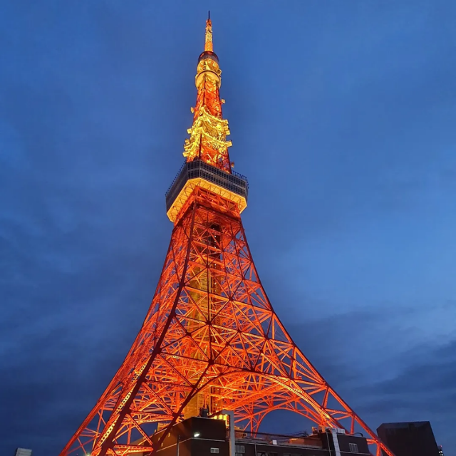

Mount Fuji
Japan’s tallest peak and a sacred symbol of beauty and culture.
Nearby Hotels:
-
Fuji View Hotel – 5 km
(4.2)
💲150 / night
-
Kawaguchiko Hotel – 6 km
(3.8)
💲120 / night
Kiyomizu-dera Temple
A UNESCO World Heritage Site in Kyoto, famous for its wooden stage.
Nearby Hotels:
-
Kyoto Century Hotel – 3 km
(4.7)
💲180 / night
-
Hotel Granvia Kyoto – 3.5 km
(4.3)
💲160 / night

Tokyo Tower
An iconic red and white landmark offering views of Tokyo city.
Nearby Hotels:
-
The Prince Park Tower Tokyo – 0.5 km
(4.8)
💲220 / night
-
Tokyo Grand Hotel – 1 km
(4.1)
💲140 / night